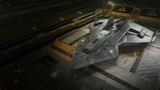

Top speed / boost
256 / 345 m/s
Six hardpoints headlined by four large mounts, strong defences and a class-6 distributor built to run all of them. The Python Mk II trades the original Python's cargo flexibility for focused killing power — it sits a couple of points below the Fer-de-Lance on pure duelling agility but is more flexible and durable in the sustained grind of RES and CZ work.

This ship's 1–100 suitability rating reflects its fully-engineered fit for this role, scored against every ship in the role. See how ships are rated.
The Python Mk II is Faulcon DeLacy's modern answer to 'what is the best medium combat ship?'. It keeps the Python name but is a different beast — a focused gunship with four large hardpoints (a count usually reserved for large ships), two mediums for support weapons, six utility mounts, and a hull and distributor sized to actually run all of it.
Critically, it has only six optional internals and no military slots — by design. Every defensive module (shield generator, shield cell banks, hull and module reinforcement) competes for those same six bays, so building it is an exercise in deliberate trade-offs rather than slotting everything. Get the balance right and it is a medium that fights like a small large ship.
High-intensity conflict zones, Hazardous RES, pirate massacres and PvP. Anywhere sustained firepower and the ability to take return fire matter more than cargo or jump range.
Four things make the Mk II a top-tier medium fighter:
Only six optionals and zero military slots is the real constraint — you cannot fit a big shield, multiple cell banks, and a wall of hull reinforcement all at once. The Fer-de-Lance out-turns it in a pure duel; the Corvette and Cutter out-tank and out-gun it outright. The Mk II's answer is balance and pad access: it does almost everything a large combat ship does, from a medium pad, for a fraction of the cost and grind.
Four large hardpoints and a class-6 distributor give it near-large-ship firepower from a medium pad with no rank gate; only six optionals and zero military slots cap its tank.
The 90/100 headline is a verdict against the combat role's priority-ordered factors. Each factor carries a weight (its share of 100); this hull earns part of each based on how it performs against the whole field. The points sum to the rating.
| Role factor | Score | Why this score |
|---|---|---|
| Hardpoints | 30/30 | Four large plus two medium mounts — a six-gun battery whose large-hardpoint count is normally reserved for large ships, beating the Krait Mk II's 3L 2M and outgunning the Fer-de-Lance's single huge mount for sustained DPS. Role-leading firepower ceiling among mediums. |
| Power distributor | 10/10 | Class-6 distributor sized specifically to fire all six guns and boost without brown-outs — the largest distributor available to a medium hull, matching the demands of four large mounts. A-rated and Charge-Enhanced it sustains the full battery indefinitely. |
| Shield | 13/15 | 335 MJ base shield reaches ~1,100+ MJ engineered with a Reinforced bi-weave plus three Heavy-Duty boosters across the six utilities. Strong for a medium, but the Cutter, Corvette and Anaconda field far higher raw MJ. |
| Armour & internals | 10/15 | 280 base armour scales to ~1,800+ engineered, but only six optional internals (6·4·3·2·1·1) and zero military slots is the hull's hard ceiling — shield, cells and hull reinforcement all compete for the same six bays. The clear limiter on its survivability. |
| Agility | 17/20 | 450t hull at 256/345 m/s base, ~400 boost engineered with Dirty Drives — agile enough to control range and brawl, but the Fer-de-Lance and Federal Assault Ship out-turn it in a pure duel. |
| Utility & flexibility | 10/10 | Six utility mounts hold a full defensive suite — three shield boosters plus chaff, heat sink and point defence — that smaller mediums cannot field. No rank or permit gate (~64.7M Cr hull) makes it the most accessible top-tier combat hull. |
| Weighted total | 90/100 | Matches the headline suitability rating for this ship in this role. |
Weights are an editorial decomposition of the role's stated priority order — not an in-game formula. Bar length shows how fully each factor is earned; the longest factors carried the score, the shortest are where it gave points away. See how ships are rated.
Both tables rate ships for the combat role specifically. The role column is the hardpoint loadout — the raw weapon mounts behind the damage.
| Ship | Class | Hardpoints | Pros & cons vs Python Mk II | Rating |
|---|---|---|---|---|
| Fer-de-Lance | Medium | 1H 4M | Huge hardpoint, best-in-class agility; the classic duellistTiny internals, short jump range, thirsty distributor | 93 |
| Krait Mk II | Medium | 3L 2M | Big guns, SLF bay, more internal room and rangeSlightly less raw firepower; broader not deeper | 90 |
| Python Mk II this | Medium | 4L 2M | — this hull (baseline) | 90 |
| Mamba | Medium | 1H 2L 2S | Fastest medium; brutal alpha with fixed weaponsPoor agility for its speed; narrow build window | 89 |
| Alliance Chieftain | Medium | 2L 1M 3S | Superb agility, tough, great AX hullLower raw DPS ceiling than the Mk II | 88 |
| Alliance Challenger | Medium | 1L 3M 3S | Tankiest Alliance hull; many hardpointsSlower; less alpha than the Mk II | 86 |
| Corsair | Medium | 3L 3M | Six guns, modern hull, strong all-rounderNewer; build knowledge still maturing | 85 |
| Federal Assault Ship | Medium | 2L 2M | Fast, agile, tough Federal brawlerFewer/smaller guns; Federal rank to buy | 84 |
| Python (original) | Medium | 3L 2M | Versatile, roomy, can also haul and mineLess focused; lower combat ceiling than the Mk II | 83 |
| Federal Gunship | Medium | 1L 4M 2S | Seven hardpoints, very tough turret boatSluggish; Federal rank gate | 82 |
Among mediums the Python Mk II is the firepower-and-balance pick. The Fer-de-Lance edges it for one-on-one duelling and the Krait Mk II offers more room and an SLF, but for sustained four-large-hardpoint killing in CZ and RES work, the Mk II is at or near the top of the class.
| Ship | Class | Hardpoints | Pros & cons vs Python Mk II | Rating |
|---|---|---|---|---|
| Federal Corvette | Large | 2H 1L 2M 2S | The combat apex — firepower and tank without peerFederal Rear Admiral rank; ~187M Cr; large pad only | 98 |
| Imperial Cutter | Large | 1H 2L 4M | Enormous shields and cargo; brutal when built for warImperial rank; turns like a moon; large pad only | 91 |
| Anaconda | Large | 1H 3L 2M 2S | Eight hardpoints, vast internals, can do everythingExpensive to engineer; ponderous | 88 |
| Vulture | Small | 2L | Small-pad agility with two large gunsFar less firepower, tank and endurance | 80 |
| Type-10 Defender | Large | 4L 3M 2S | Turret platform; superb AX; very toughSlow and unwieldy in normal PvE combat | 78 |
Stepping up from the Mk II means a large pad and, usually, a rank grind. The Corvette is the definitive upgrade if you'll do the Federal grind; the Cutter if Imperial. Until then, the Python Mk II delivers most of a large ship's combat capability from a medium pad — which is exactly why it's a flagship-tier choice.
The Python Mk II is not cheap — the hull alone is around 64.7M Cr — but it carries no rank or permit gate, so it is open to any commander with the credits. That makes it the most accessible top-tier combat ship: no Federal or Imperial grind required, just money.
Full A-rating and engineering push the all-in figure past 110M Cr including modules. For the capability — near-large-ship firepower on a medium pad — it is reasonable value, and considerably less total investment than a rank-gated Corvette or Cutter.
Faulcon DeLacy offers the Python Mk II as an ARX pre-built 'Stellar' package and as a Stored-access hull. The pre-built ships follow the standard rule: stock modules sell for 0 Cr and cannot be stored or transferred, but engineering the stock cores in place does not void the free rebuy.
If you took a pre-built, never strip the stock modules — only add to open slots and engineer the cores where they sit.
| Package | Python Mk II (pre-built access) |
|---|---|
| Includes | Pre-fitted hull, ship kit, paint job |
Engineering a stock module in place is safe and keeps the free rebuy. Swapping a stock module out forfeits it for 0 Cr. Build around the stock fit, not over it.
A three-state combat fit working within the Python Mk II's hard six-optional / zero-military constraint. Every defensive choice trades against another — this build prioritises a strong bi-weave plus reinforcement over a deep cell-bank stack. Initial is buy-only survivability; A-Rated is the RES-ready baseline; Engineered applies the house combat pattern on a heavy medium.
| Slot | Initial · buy-only | A-Rated · no eng | Engineered | Notes |
|---|---|---|---|---|
| Hardpoints | ||||
| Large 1 | 3E Pulse Laser (Gimballed) | 3C Multi-Cannon (Gimballed) | G5 Overcharged + Corrosive Shell | Primary large multi-cannon; the single Corrosive Shell strips armour resistance for the whole battery. |
| Large 2 | 3E Pulse Laser (Gimballed) | 3C Multi-Cannon (Gimballed) | G5 Overcharged + Auto Loader | Second large multi-cannon; Overcharged for raw DPS, Auto Loader removes reloads so it never stops firing. |
| Large 3 | 3C Multi-Cannon (Gimballed) | 3C Beam Laser (Gimballed) | G5 Efficient + Thermal Vent | Large beam for shield-stripping; Thermal Vent vents heat so it runs cold under sustained fire. |
| Large 4 | 3C Multi-Cannon (Gimballed) | 3C Beam Laser (Gimballed) | G5 Efficient + Thermal Vent | Second Thermal-Vent beam — paired beams crack shields fast while keeping the hull heat-neutral. |
| Medium 1 | 2F Multi-Cannon (Gimballed) | 2F Multi-Cannon (Gimballed) | G5 Overcharged + Auto Loader | Support multi-cannon; Overcharged + Auto Loader keeps its DPS uninterrupted. |
| Medium 2 | 2F Multi-Cannon (Gimballed) | 2F Multi-Cannon (Gimballed) | G5 Overcharged + Auto Loader | Second medium multi-cannon mirrors the first for a continuous kinetic stream once shields drop. |
| Utility Mounts | ||||
| Utility 1 | 0A Shield Booster | 0A Shield Booster | G5 Heavy Duty + Super Capacitors | First of the shield-booster stack; Heavy Duty multiplies the bi-weave's raw MJ. |
| Utility 2 | — | 0A Shield Booster | G5 Heavy Duty + Super Capacitors | Stacked Heavy-Duty booster — the cheapest large gain in shield strength. |
| Utility 3 | — | 0I Chaff Launcher | G1 Ammo Capacity (no experimental effect) | Optional / low-priority — Ammo Capacity adds chaff salvos. Chaff spoils gimballed and turreted fire. |
| Utility 4 | — | 0I Heat Sink Launcher | G1 Ammo Capacity (no experimental effect) | Optional / low-priority — Ammo Capacity adds heat-sink charges. Dumps heat for silent running and Thermal-Vent resets. |
| Utility 5 | — | 0I Point Defence | G1 Ammo Capacity (no experimental effect) | Optional / low-priority — Ammo Capacity adds rounds. Point Defence shoots down incoming missiles and torpedoes. |
| Utility 6 | — | 0A Shield Booster | G5 Heavy Duty + Super Capacitors | Third Heavy-Duty booster fills the last utility, completing the shield stack. |
| Core Internals | ||||
| Bulkheads | Lightweight Alloy | Military Grade Composite | G5 Heavy Duty + Deep Plating | |
| Power Plant | 6E Power Plant | 6A Power Plant | G5 Overcharged + Thermal Spread | Powers six guns, a big shield and cells; Overcharged adds headroom, Thermal Spread bleeds the extra heat. |
| Thrusters | 6E Thrusters | 6A Thrusters | G5 Dirty Drive Tuning + Drag Drives | A-rated + Dirty Drives keep a 450t brawler agile enough to control range. |
| Frame Shift Drive | 5E Frame Shift Drive | 5A Frame Shift Drive | G3 Increased Range (no experimental effect) | A-rated to reposition between fights; only G3 range — combat doesn't need a jump monster. |
| Life Support | 4E Life Support | 4D Life Support | G5 Lightweight (no experimental effect) | D-rate to save mass, Lightweight trims more; life support has no experimental effect. |
| Power Distributor | 6E Power Distributor | 6A Power Distributor | G5 Charge Enhanced + Super Conduits | A-rate this FIRST — four large guns plus boost drain the class-6 distributor faster than anything else. |
| Sensors | 5E Sensors | 5D Sensors | G5 Lightweight (no experimental effect) | Drop to D and go Lightweight; combat needs no sensor range, so save the mass. |
| Fuel Tank | 4C Fuel Tank | 4C Fuel Tank | (No blueprint available) | Stock tank; fuel capacity is fixed and cannot be engineered. |
| Optional Internals | ||||
| Size 6 | 6E Shield Generator | 6C Bi-Weave Shield Generator | G5 Reinforced + Fast Charge | The class-6 bay holds the shield: a bi-weave regenerates fast under fire, Reinforced maximises its MJ and Fast Charge speeds the broken-shield recharge for a brawler that re-engages. |
| Size 4 | 4E Hull Reinforcement | 4D Hull Reinforcement | G5 Heavy Duty + Deep Plating | Heavy-Duty hull reinforcement is the cheapest large multiplier on effective armour; size-4 is the largest the spare bay allows. |
| Size 3 | — | 3D Hull Reinforcement | G5 Heavy Duty + Deep Plating | Second Heavy-Duty HRP — armour stacks linearly, so a second plate is pure survivability. |
| Size 2 | — | 2D Module Reinforcement | (No blueprint available) | Module Reinforcement spreads penetrating-hit damage across internals; not engineerable. |
| Size 1 | — | 1A Shield Cell Bank | G4 Specialised + Flow Control | Optional / low-priority — Specialised cuts the cell bank's heat and power spike. Burst shield healing for emergencies. |
| Size 1 | — | 1D Module Reinforcement | (No blueprint available) | Last small bay takes a second Module Reinforcement to protect the cores; not engineerable. |
| Open in planner / Export | ||||
| Open in Coriolis | open | open | open | One-click open at coriolis.io. |
| Open in EDSY | open | open | open | One-click open at edsy.org. |
| Copy SLEF | Copies the raw Ship Loadout Export Format for that state. | |||
With no military slots, the class-6 optional almost always holds the shield generator and the rest become a deliberate reinforcement/cell-bank balance. Hull-tank and shield-tank variants simply re-weight these six bays.
Buy the hull and keep the stock Lightweight Alloy bulkheads — spend nothing on armour yet. Fit the largest shield generator the class-6 bay allows, plus a single hull reinforcement — survivability first.
Arm the four large mounts with two gimballed pulse lasers and two gimballed multi-cannons, and both mediums with gimballed multi-cannons; gimbals are forgiving before engineering.
Fit a single shield booster in the first utility and leave the remaining utility and optional bays empty for now — even this minimal buy-only state is RES-capable.
A-rating priority for a heavy medium fighter:
The full utility bank fills out here too — three shield boosters, chaff, a heat sink and point defence — backed by a 1A shield cell bank and module reinforcement for a layered, hard-to-crack defence.
On a four-large-hardpoint ship the distributor decides everything — A-rate and Charge-Enhance it before you touch a gun blueprint.
The full house combat pattern on a heavy medium. Pin each blueprint at its engineer for remote G1→G5 application; visit in person for experimentals (Corrosive, Thermal Vent, Fast Charge).
| Module | Blueprint | Experimental | Engineer |
|---|---|---|---|
| Power Plant (6) | Overcharged (G5) | Thermal Spread | Hera Tani |
| Thrusters (6) | Dirty Drive Tuning (G5) | Drag Drives | Professor Palin / Mel Brandon |
| Multi-Cannons | Overcharged (G5) | Corrosive Shell (one) / Auto Loader (rest) | Tod McQuinn |
| Beam Lasers | Efficient (G5) | Thermal Vent | Broo Tarquin |
| Power Distributor (6) | Charge Enhanced (G5) | Super Conduits | The Dweller |
| Bi-Weave Shield (6) | Reinforced (G5) | Fast Charge | Lei Cheung / Elvira Martuuk |
| Shield Boosters | Heavy Duty (G5) | Super Capacitors | Didi Vatermann |
| Bulkheads | Heavy Duty (G5) | Deep Plating | Selene Jean |
| Hull Reinforcement | Heavy Duty (G5) | Deep Plating | Selene Jean |
| FSD (5) | Increased Range (G3) | — | Felicity Farseer |
A material-heavy build — G5 across plant, thrusters, distributor, weapons and defences. With a complete material inventory this is engineering-spend rather than farming. Ask for the exact per-blueprint counts to verify reserves before committing.
Approximate progression across the three states (figures are representative, not exact rolls):
| Stat | Initial | A-rated | Engineered |
|---|---|---|---|
| Top speed (boost) | 345 m/s | 345 m/s | ~400 m/s |
| Shield (MJ) | ~470 | ~620 | ~1,100+ |
| Armour (eff.) | ~430 | ~850 | ~1,800+ |
| Sustained DPS | high | very high | elite |
| Weapon endurance | medium | long | very long |
Initial armour rides on stock Lightweight Alloy plus one reinforcement; A-rating swaps in Military Grade Composite bulkheads over dual hull reinforcement, and engineering — Heavy Duty G5 on the bulkheads atop the reinforcement packages — multiplies effective armour several-fold. Shields roughly double, and four large hardpoints sustain almost indefinitely. A Thermo Block shield cell bank lets you bank a cell mid-brawl without spiking heat — combat numbers that brush against large-ship territory from a medium pad.
Any system with a Haz RES and active conflict zones suits it. As your combat flagship it pairs naturally with your Imperial-rank work — CZ and massacre payouts there double as standing progress.
The Python Mk II is a medium that fights like a small large ship, with no rank gate to earn it. The six-optional/zero-military design forces real defensive trade-offs, but four large hardpoints, a class-6 distributor and six utilities make it one of the most capable combat hulls a credit-rich commander can buy. As a flagship combat platform, it's an outstanding choice.
Figures on this page are verified against the sources below.